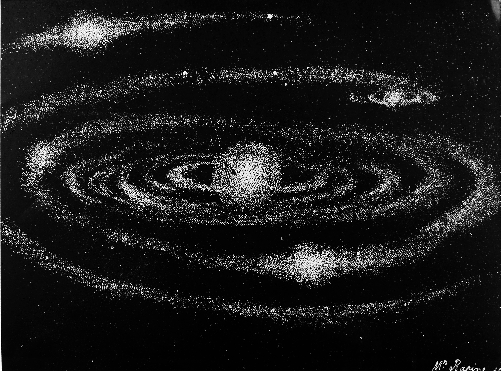
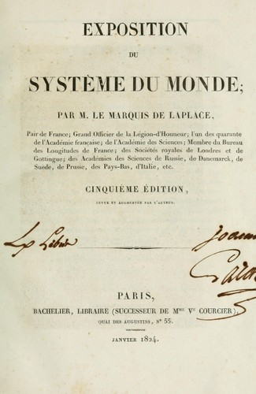

Pierre-Simon Laplace
Pierre-Simon LaplacePierre-Simon Laplace is most-known for his investigations on the stability of the Solar System. Laplace successfully accounted for all the observed deviations of the planets from their theoretical orbits by applying Sir Isaac Newton’s theory of gravitation to the solar system, and he developed a conceptual view of evolutionary change in the structure of the solar system.
In 1773 he began his major lifework—applying Newtonian gravitation to the entire solar system—by taking up a particularly troublesome problem: why Jupiter’s orbit appeared to be continuously shrinking while Saturn’s continually expanded. The mutual gravitational interactions within the solar system were so complex that mathematical solution seemed impossible; indeed, Newton had concluded that divine intervention was periodically required to preserve the system in equilibrium.
His Mécanique Céleste reworks Newton's Principia using the differential calculus. It contains the famous nebular hypothesis of the origin of the solar system, first suggested by Emanuel Swedenborg and Immanuel Kant. Laplace removed the last apparent anomaly from the theoretical description of the solar system in 1787 with the announcement that lunar acceleration depends on the eccentricity of the Earth’s orbit. Although the mean motion of the Moon around the Earth depends mainly on the gravitational attraction between them, it is slightly diminished by the pull of the Sun on the Moon. This solar action depends, however, on changes in the eccentricity of the Earth’s orbit resulting from perturbations by the other planets. As a result, the Moon’s mean motion is accelerated as long as the Earth’s orbit tends to become more circular; but, when the reverse occurs, this motion is retarded. The book made him a celebrity.
In 1796 Laplace published Exposition du système du monde (The System of the World), a semipopular treatment of his work in celestial mechanics and a model of French prose. The book included his “nebular hypothesis”—attributing the origin of the solar system to cooling and contracting of a gaseous nebula—which strongly influenced future thought on planetary origin.
His work consisted of five books: the first was on the apparent motions of the celestial bodies, the motion of the sea, and also atmospheric refraction; the second was on the actual motion of the celestial bodies; the third was on force and momentum; the fourth was on the theory of universal gravitation and included an account of the motion of the sea and the shape of the Earth; the final book gave an historical account of astronomy and included his famous nebular hypothesis.
His approach to physics, attempting to explain everything from the forces acting locally between molecules, influenced physics greatly. In 1805, he wrote a study of pressure and density, astronomical refraction, barometric pressure and the transmission of gravity based on this new philosophy of physics. Laplace continued to apply his ideas of physics to other problems such as capillary action, double refraction, the velocity of sound, the theory of heat, and elastic fluids, and he wrote papers on all these subjects.